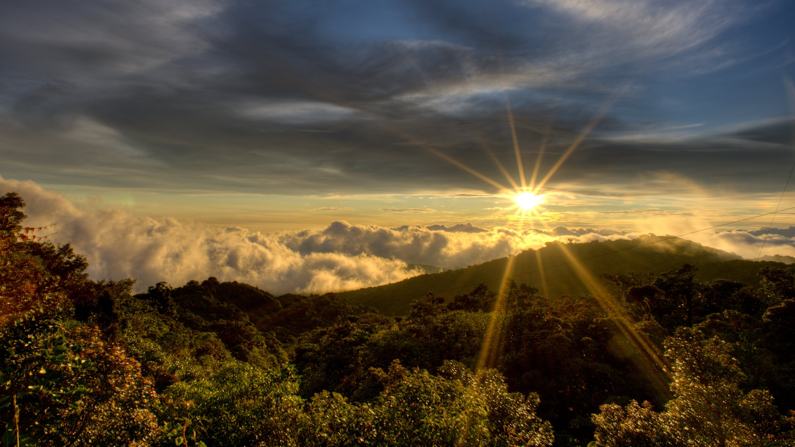
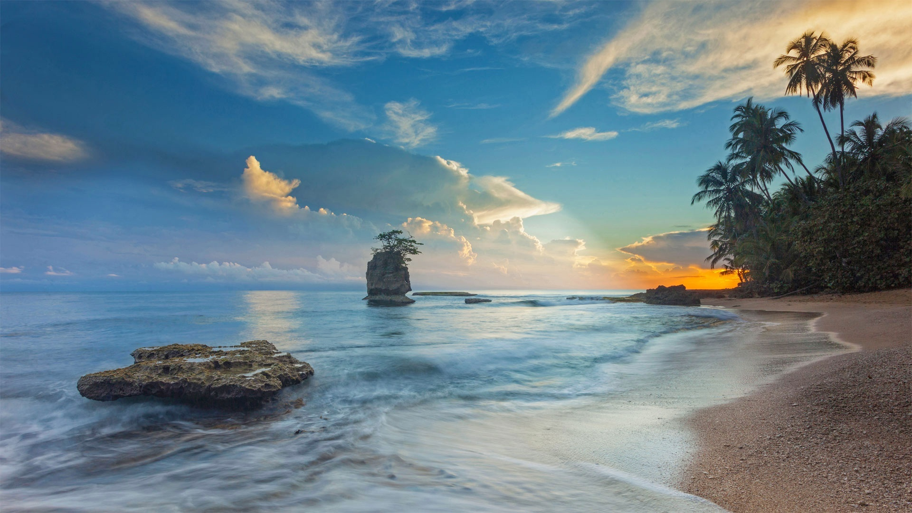

Nuestros Tours

Volcán Arenal
El majestuoso coloso de Costa Rica, rodeado de aguas termales y bosque tropical.
- Duración: 1 día
- Máximo: 20 personas
- Incluye almuerzo

Guanacaste
Playas doradas, puestas de sol espectaculares y cultura guanacasteca.
- Duración: 2 días
- Máximo: 15 personas
- Incluye todas las comidas

Cerro Chirripó
El punto más alto de Costa Rica, donde las nubes tocan la tierra.
- Duración: 2 días
- Máximo: 12 personas
- Incluye todas las comidas

Manuel Antonio
Donde el bosque se encuentra con el mar, hogar de una increíble biodiversidad.
- Duración: 1 día
- Máximo: 15 personas
- Incluye almuerzo

Monteverde
Bosque nuboso místico con una biodiversidad única en el mundo.
- Duración: 2 días
- Máximo: 15 personas
- Incluye todas las comidas

Puerto Viejo
Paraíso caribeño con rica cultura afrocaribeña y playas paradisíacas.
- Duración: 3 días
- Máximo: 12 personas
- Incluye todas las comidas

Río Celeste
Descubre el mágico río de aguas turquesas en el Parque Nacional Volcán Tenorio.
- Duración: 1 día
- Máximo: 15 personas
- Incluye almuerzo

Cahuita
Explora los arrecifes de coral y la exuberante selva tropical del Caribe.
- Duración: 2 días
- Máximo: 10 personas
- Incluye todas las comidas

San José
Recorre la capital y descubre su rica historia, cultura y arquitectura.
- Duración: 1 día
- Máximo: 20 personas
- Incluye almuerzo